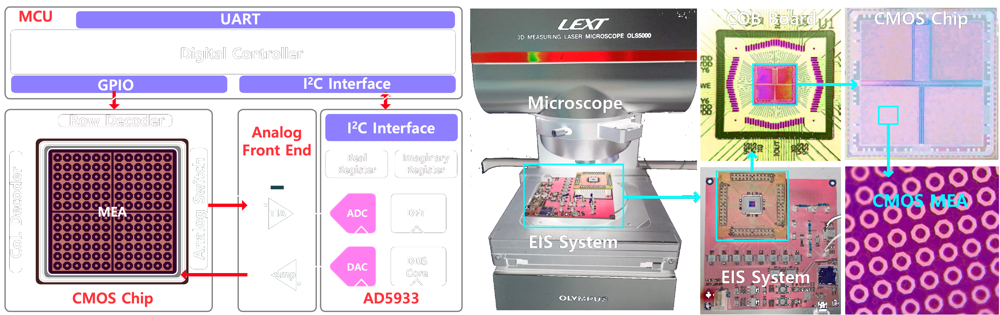
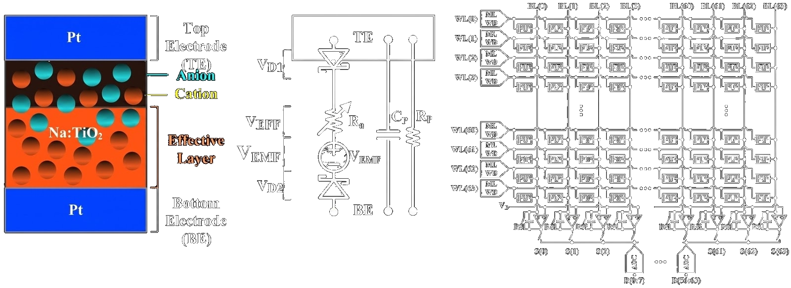
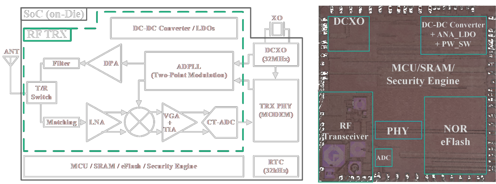

Our group fundamentally focuses on Physical Hardware & IC Design. We create self-contained microsystems by designing novel microstructures and low-power analog/mixed-signal circuits. System-level embedded software is strictly implemented to interface, control, and validate our proprietary custom-designed silicon chips.

Ultra-low-power CMOS biosensor hardware design for point-of-care diagnostics. We design physical chips such as CMOS impedance sensors integrated with 128x128 microelectrode arrays, EIS-based DDS circuits, and microfluidic-CMOS platforms.

Hardware-efficient neuromorphic computing designs. We build physical AI chips, including Spiking Neural Network (SNN) MAC accelerators utilizing emerging RRAM crossbar arrays and customized CMOS Leaky Integrate-and-Fire (LIF) neuron circuits.

Transistor-level RF and analog/mixed-signal IC design employing gm/ID methodologies for high-performance communication. Research spans wideband RF MEMS filters, quadrature LO generators, and multi-GHz PLL architectures in advanced CMOS nodes.